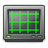
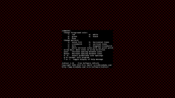

Lcdtest
Dieser Artikel wurde für die folgenden Ubuntu-Versionen getestet:
Ubuntu 14.04 Trusty Tahr
Zum Verständnis dieses Artikels sind folgende Seiten hilfreich:

Lcdtest  ist ein kleines Werkzeug, um TFT-Monitore auf Pixelfehler zu testen. Alternativ kann man verschiedene Webseiten nutzen. Der Vorteil des Programms ist allerdings, dass man es auch offline bzw. ohne Internetverbindung verwenden kann. Die Programmsprache ist Englisch, um einen möglichst universellen Einsatz zu ermöglichen.
ist ein kleines Werkzeug, um TFT-Monitore auf Pixelfehler zu testen. Alternativ kann man verschiedene Webseiten nutzen. Der Vorteil des Programms ist allerdings, dass man es auch offline bzw. ohne Internetverbindung verwenden kann. Die Programmsprache ist Englisch, um einen möglichst universellen Einsatz zu ermöglichen.
Installation¶
|  |
| Lcdtest in Aktion |
Da der Autor für die aktuelle Version 1.18 kein .deb-Paket bereitstellt, muss die Software aus dem Quelltext selbst kompiliert [1] werden. Hierzu wird das Programm SCons verwendet. Folgende Abhängigkeiten sind zum Kompilieren erforderlich [2]:
scons
libsdl-image1.2-dev
libsdl-ttf2.0-dev
libsdl1.2-dev
fonts-liberation
 mit apturl
mit apturl
Paketliste zum Kopieren:
sudo apt-get install scons libsdl-image1.2-dev libsdl-ttf2.0-dev libsdl1.2-dev fonts-liberation
sudo aptitude install scons libsdl-image1.2-dev libsdl-ttf2.0-dev libsdl1.2-dev fonts-liberation
Anschließend ist noch eine Verknüpfung erforderlich [3][4]:
sudo ln -s /usr/share/fonts/truetype/liberation/ /usr/share/fonts/liberation
Nun kann die Archivdatei lcdtest-VERSION.tar.gz mit dem Quellcode von der Projektseite  heruntergeladen und entpackt [6] werden. Nach dem Wechsel in das Verzeichnis (z.B. lcdtest-1.18) kann man das Programm kompilieren [1]:
heruntergeladen und entpackt [6] werden. Nach dem Wechsel in das Verzeichnis (z.B. lcdtest-1.18) kann man das Programm kompilieren [1]:
scons
Dann kann das Programm lokal getestet werden:
build/lcdtest
und anschließend mit:
sudo scons install
installiert werden. Danach kann das Programm von beliebiger Stelle aus mit dem Befehl:
lcdtest
gestartet werden [5].
Bedienung¶
Man kann sich Kästchenmuster in verschiedenen Größen und Formen oder einen komplett einfarbigen Bildschirm jeweils in den drei Grundfarben Rot, Grün und Blau anzeigen lassen, um Sektor für Sektor den Bildschirm nach Pixelfehlern abzusuchen. Die Bedienung funktioniert über folgende Tasten:
| Tastenkürzel | |
| Taste | Funktion |
| ? oder / | Hilfe ein- und ausblenden |
| Q oder Esc | Lcdtest beenden |
| R | Farbe Rot |
| G | Farbe Grün |
| B | Farbe Blau |
| W | Farbe Weiß |
| K | Farbe Schwarz |
| H | horizontale Linien |
| V | vertikale Linien |
| C | Gitterstruktur |
| X | diagonale Gitterstruktur |
| S | Bildschirmoberfläche komplett ausfüllen |
| A | Weiße vertikale Linien mit zwei Pixeln Abstand |
 | Linien verschieben |
| + | Linienabstand vergrößern |
| - | Linienabstand verringern |
| 0 - 9 | Vordefinierte Abstände einstellen |
Links¶
Versionshistorie
- hier gibt es auch ein DEB-Paket der älteren Version 1.08LCD-Monitore auf Pixelfehler testen
 - schneller und unkomplizierter Online-Test für TFTs
- schneller und unkomplizierter Online-Test für TFTsThe Lagom LCD monitor test pages
- weiterer Online-Testctscreen
- Monitor-Testprogramm als Java-Applet (auch offline)xcalib - Monitorkalibrierung
Monitor profilieren mit ArgyllCMS - Farbverbindlichkeit definieren
Grafikkarten
 Artikelübersicht
Artikelübersicht
- Erstellt mit Inyoka
-
 2004 – 2017 ubuntuusers.de • Einige Rechte vorbehalten
2004 – 2017 ubuntuusers.de • Einige Rechte vorbehalten
Lizenz • Kontakt • Datenschutz • Impressum • Serverstatus -
Serverhousing gespendet von